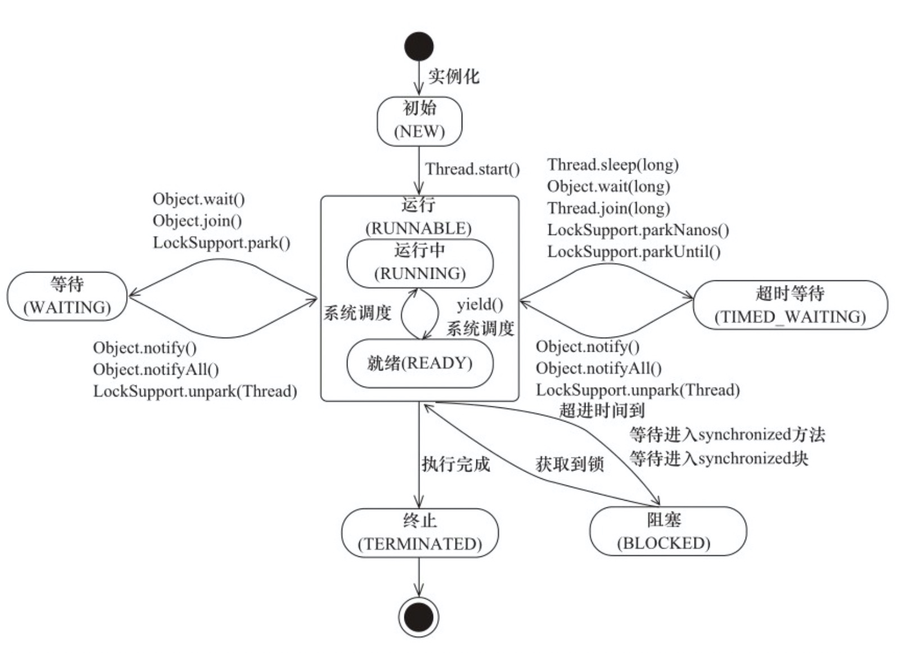

Java领域实现并发的主要手段就是多线程，而线程是有生命周期的，要学好他需要搞懂生命周期中各个节点的的转态转化机制。同时针对多线程如何配置合适的线程数，以及具体的使用场景
Java生命周期
Java线程的状态
| 状态名称 | 说明 |
|---|---|
| NEW | 初始状态，线程被创建，但是还后没有执行start()方法 |
| RUNNABLE | 运行状态，Java中把准备就绪和正在运行的线程转态称合为一体”运行中" |
| BLOCKED | 阻塞状态，表示线程阻塞于锁 |
| WAITING | 等待状态，表示线程进入等待状态 |
| TIME_WAITING | 超时等待状态，与普通等待状态不同的是超时后自动返回 |
| TERMINATED | 终止状态，表示当前线程执行完毕 |
Java线程转态的转化

Java多线程
在并发编程领域，提升性能的本质是提升硬件的利用率，具体就是提升CPU和I/O的利用率，而并发编程要求解决CPU和I/O的综合利用率，解决方案就是多线程
线程个数
- 对于CPU密集型，理论上线程数等于CPU核数，工程中设置为线程数+1，这样当线程因为内存页失效或者是其他原因导致的阻塞时，额外的线程可以切换，保证CPU利用率
- 对于I/O密集型，CPU耗时和I/O耗时有关具体位置，参考公式为
- \(最佳线程数 = CPU核数*[1+\frac{I/O耗时}{CPU耗时}]\)